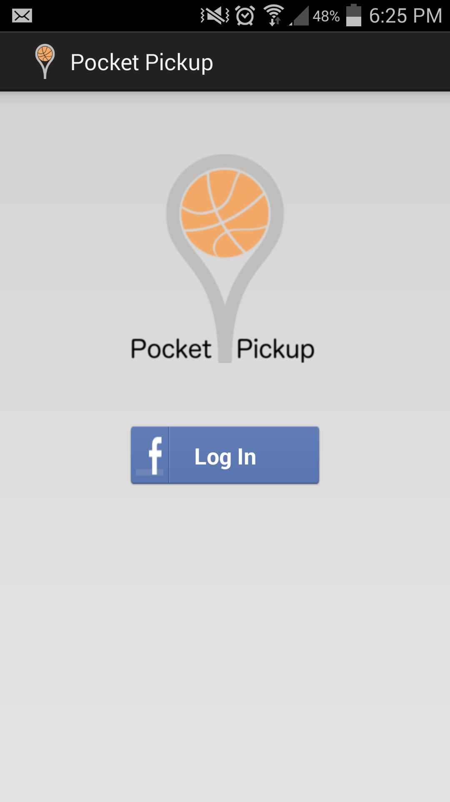
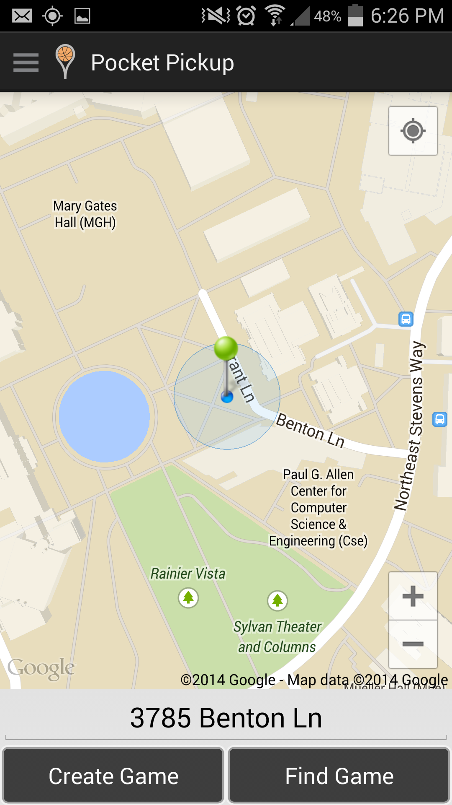
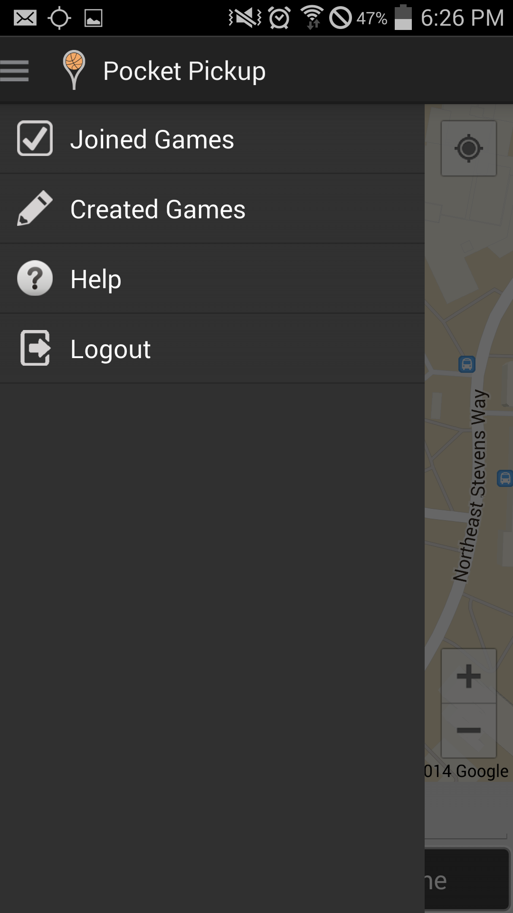
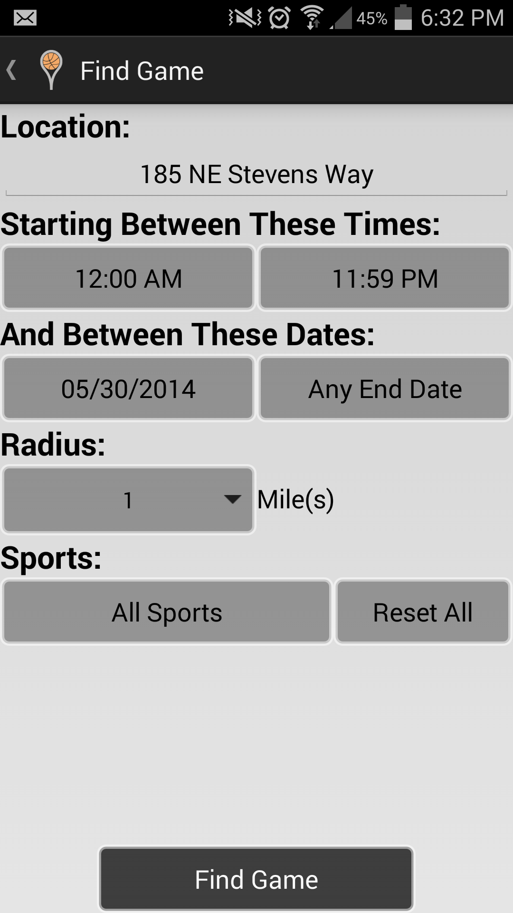
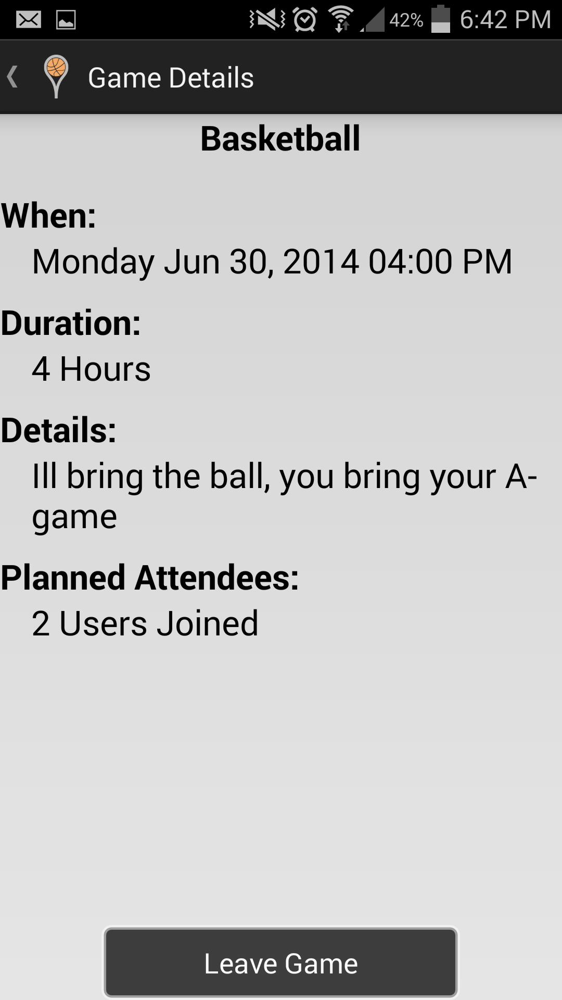

Sergey Naumets (snaumets@cs)
Victor Farkas (vfarkas@cs)
Jacob Gile (jjgile@cs)
Patrick Larson (palarson@cs)
Kane Swanson (kane@cs, kdswan@uw)
Isaiah Mathieu (imathieu@cs)
Pocket Pickup helps you arrange pickup games with friends or other like-minded individuals. Create or find and join a pick up game at a time and place convenient for you. Unlike some alternative apps, Pocket Pickup allows you to choose from a wide selection of sports, including:
Pocket Pickup can be downloaded from our website. Find the most recent version under the
'Releases' section and follow the instructions.
https://sites.google.com/site/cse403teamposeidon/
Once Pocket Pickup has been downloaded to your Android device, it can be run just as any
other app.
In order to use Pocket Pickup, users must have a Facebook account. Follow the instructions that appear during the first time you open the app. Pocket Pickup will never post to Facebook on your behalf.
The homepage of Pocket Pickup is a map, with a green pin representing the target location. the pin will default to the user's location. The closest available address is displayed near the bottom of the screen, as are button for creatig and finding games.
The top left corner of the screen is a Settings center. This displays information about what games you have joined or created. Tapping Joined Games or Created Games will display all games on the map that you have joined or created, respectively, on your current profile. You may also choose to logout from this menu.
To create a game:
To find a game, press the 'Find Game'. On the search screen, enter the information for what kind of game you are looking for. After the search there will be a view of the map that displays all relevant games within a provided radius. Tap the game's flag to view details, and tap the 'Join Game' button to be added as an attendee.
To unregister for a game that you have joined, find its location on the map and tap on its flag. Then, select the 'Leave' option. If you are the only attendee of a game, this button will show 'Delete Game', and will delete the game.

To submit a bug, add it to our issues page at:
https://github.com/isaiahmathieu/pocketpickup/issues
On the issues page, press the 'New Issue' button. Then, fill out a
title for the bug as well as an informative description.
A good title for the bug report should be a brief summary of the issue. An informative
description should include the type of bug (e.g. the app crashed to the home screen) as well as
a list of steps to produce it. A useful description of effective bug reports may be found here:
http://www.oracle.com/technetwork/articles/javase/bugreport-howto-135155.html